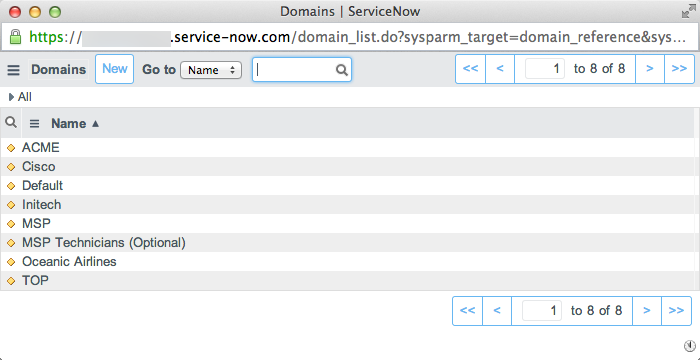
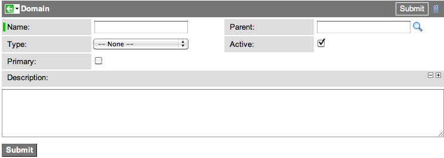

Domain Separation Setup
| |
Note: This article applies to Fuji. For more current information, see Domain Separation Setup and Basic Administration at http://docs.servicenow.com
The ServiceNow Wiki is no longer being updated. Please refer to http://docs.servicenow.com for the latest product documentation. |
Contents
- 1 Overview
- 2 Activating Domain Separation
- 3 Configuration Module
- 4 Domain Separation Options
- 4.1 Adding a Domain Field to a Table
- 4.2 Adding Domains to a Visibility Domains List
- 4.3 Creating Contains Relationships Between Domains
- 4.4 Creating Domain-Specific Choice Lists
- 4.5 Displaying Domain Selection Menus
- 4.6 Viewing Domain Relationships
- 4.7 Creating a New Domain
- 4.8 Managing Domains from a Company Record
- 4.9 Setting the Default Domain Scope
- 4.10 Disabling Domain Scope Notifications
- 5 Assigning Users and Records to Domains
1 Overview
Setting up domain separation requires completing these tasks:
- Request activation of the Domain Extensions plugin.
- [Optional] Set domain separation options.
- Assign users and records to domains.
| |
Note: Customers cannot see the domain support plugin, even when it is active. |
Activating the Domain Extension plugin enables these features:
- Domain separation is based on the Domain [domain] table.
- Delegated administration lets each domain have separate policy.
- All records are part of the global domain.
- The current user's domain determines the domain to use when viewing or operating on a record in a different domain.
Domain separation replaces Company Separation. However, if company separation is already active when you activate domain separation, both plugins are active at the same time. To disable company separation, go to System Properties [sys_properties] table and delete the glide.db.separation.field property.
How you set up domain separation depends on the release version of your instance. These instructions are for customers on Eureka or later releases. Customers on earlier releases should see Domain Separation Setup - Versions Prior to Eureka.
2 Activating Domain Separation
All domain support features are activated with one plugin called Domain Support - Domain Extensions, starting with the Fuji release. The plugin replaces these plugins from previous releases:
- Domain Support (version 2.0)
- Domain Support - Common
- Domain Support - MSP Extensions
In the Eureka release, the plugin is named Domain Support - MSP Extensions Installer.
2.1 Requesting the Plugin
Request this plugin from technical support.
| Click the plus to expand instructions for requesting a plugin. |
|---|
|
3 Configuration Module
The Domain Admin > Configuration module is the central location where an administrator enables, configures, and views the status of domain separation support.
The Configuration module consists of these fields.
| Field | Description | ||
|---|---|---|---|
| Domain Table | Select the table containing domain names for domain separation. You can select any existing table. By default, the system uses the Domain [domain] table.
| ||
| Domain Validation | Lists any current validation issues. Click the More link to see validation options. | ||
| Domain Progress Workers | Lists any currently running conversion or validation processes. | ||
| Domain Alerts | Lists any information, warning, or error messages relating to domain separation. You can also find this information in the instance log. | ||
| Enable Domain Separation | Select whether to enable or disable domain separation. By default, domain separation is enabled. You can manually disable domain separation with this setting. This option maps to the system property glide.sys.domain.partitioning. | ||
| Enable Delegated Administration | Select whether to enable or disable delegated administration. By default, delegated administration is enabled. You can manually disable delegated administration with this setting. This option maps to the system property glide.sys.domain.delegated_administration. | ||
| Enable verbose domain logging | Select whether to enable additional debugging information for domain separation. This option maps to the system property glide.sys.domain.verbose. |
4 Domain Separation Options
You can set the following domain separation configuration options by navigating to Domain Admin > Configuration:
- Add a domain field to a table.
- Enable domain log and debug messages.
- Add domains to a visibility domains list.
- Create a contains relationships between domains.
- Create domain-specific choice lists.
- Display domain selection menus.
- Viewing Domain Relationships
- Creating a New Domain
- Managing Domains from a Company Record
- Setting the Default Domain Scope.
- Disabling Domain Scope Notifications.
4.1 Adding a Domain Field to a Table
Administrators can domain separate custom tables by adding a sys_domain field to it. To add a sys_domain field to a table:
- Navigate to the table's list view. For example, type <table name>.list in the navigation filter.
- Right-click the list header and select the appropriate option for your version:
- In the Create new field section, enter the following values:
- Name: sys_domain
- Type: Domain ID
- Click Add.
- Click Save.
| |
Note: Any other means of creating a field adds a u_ prefix to the column name. For domain separation to work the column name must be sys_domain without any u_ prefix. |
4.2 Adding Domains to a Visibility Domains List
Adding a visibility domain allows a user or group to see and potentially edit records from another domain regardless of the user or group's normal domain membership. Assigning visibility domains to all members of a group is preferred over granting them to individual users.
| |
Note: Adding a visibility domain does not change a table or record's access control rule requirements. |
To grant visibility domains to a group:
- Navigate to User Administration > Groups.
- Select the group you want to provide with visibility domains.
- Add the Visibility domains related list to the form.
- From the Visibility domains related list, click Edit.
- Select the domain records you want the group or domain to see.
- Click Save, and then click Update.
To grant visibility domains to an individual user:
- Navigate to User Administration > Users.
- Select the user you want to provide with visibility domains.
- Add the Visibility domains related list to the form.
- From the Visibility Domains related list, click Edit.
- Select the domains whose records you want the user to see.
- Click Save, and then click Update.

The Visibility domain embedded list contains the following fields.
| Field | Description |
|---|---|
| Domain | Domain that is visible to the group or user. |
| Inherited | Indicates the domain is inherited from domain visibility or a parent domain. |
| Granted By | Name of the group that granted domain visibility. |
| Parent visibility | Name of the parent domain and used for grouping records. If the parent record is deleted, then all records with the same parent are deleted as well. |
4.3 Creating Contains Relationships Between Domains
Creating a contains relationship between domains changes the domain hierarchy. Domains in a contains relationship inherit the visibility settings of the containing domain. The containing domain allows users to see data in the contained domain as well as any of its children. Processes are unaffected by a contains relationship.
- Navigate to the domain table.
- Select the domain record that will be the parent (container) domain of the new contains relationship.
- Toggle the domain scope to switch between the session scope and record scope, if necessary.
- From the Contains Domains related list, click Edit.
- Select the domain records that will be the child (contained) domains of the contains relationship. Starting with the Fuji release, only child domains appear by default when the domain picker is set to Global. Toggle the domain scope to see all domains in slushbucket.
- Click Save, and then click Update.
4.4 Creating Domain-Specific Choice Lists
For choice list values, as for other UI components like lists, forms, sections, and so on, domain separation also determines which records appear on a page.
- If there is a choice in the current domain, then it is used.
- If there is no choice in the current domain, then the choice that is in the closest parent domain is used.
- If no choice is found in the current domain or any parent, then the form that is in the global domain is used.
This logic applies to choice list values as a set. As soon as one choice list is found for the relevant table and field, then only that set of choices appears in the drop-down list.
Administrators can configure choice lists to contain entries specific to a particular domain.
- Select the domain from domain picker where the choice should be added.
- Right-click the field and select Configure Choices (Personalize Choices in versions prior to Fuji).
- Update or add choices.
- Push changes through the normal change process such as update sets.
| |
Note: Administrators should ensure that choices are unique across domains to prevent administrative confusion in the global domain. |
If an administrator adds a new choice from the global domain, then users from domains lower in the hierarchy see the new choice at the end of their current choice lists. If the new choice is not active at the global level, then it is available to the domain users via Configure Choices (Personalize Choices in versions prior to Fuji), but does not show as an active choice.
4.5 Displaying Domain Selection Menus
ServiceNow offers domain selection via two menu formats that are controlled by UI macros. Both domain selection menus are disabled by default. These menus appear on the right side of the Welcome banner at the top of the page.
The available menu formats are:
- Simple domain picker: provides a simple drop-down list of available domains.
- Domain reference picker: enables a reference field that offers filtering and an auto-complete, type-ahead, entry feature. This format is suitable for longer lists.
The reference pickers provide access to all domains that the user has access to (starting with the Fuji release). Prior to the Fuji release, parent domains did not appear in the reference picker if a user switched to a lower-level domain.
4.5.1 Simple Domain Picker
The simple domain picker is a drop-down list of available domains and does not support the auto-complete, type ahead feature. Use this menu format for a short list of domains.
To enable the simple domain picker:
- Navigate to System UI > UI Macros.
- Select the domain_select macro.
- Select the Active check box and click Update.
- Refresh the browser.
- Click the Gear icon in the banner frame.
4.5.2 Domain Reference Picker
Use the domain reference picker for long lists that require excessive scrolling. The reference picker supports auto-complete typing and displays a filterable list of domains.
To activate the domain reference picker:
- Navigate to System UI > UI Macros.
- Select the domain_reference_picker macro.
- Select the Active check box and click Update.
- Refresh the browser.
- Click the Gear icon in the banner frame.
- Click the magnifier icon in this field to open a list of domains that can be filtered for easy selection.
- List of domains
- To use the auto-complete feature, type a letter in the field. The menu displays all domains beginning with that letter.
4.5.3 Restricting Access to Domain Selection by Role
To restrict access to either domain selection menu format by role:
- Navigate to System UI > UI Macros.
- Select any of the four domain-related UI macros: two named domain_select and two named domain_reference_picker. There are two of each type two support different UIs. The UI macros with the Media Type field empty are for UI11, and the other two are for UI15.
- Locate one of the following lines of code:
- domain_select:
var ds = new DomainSelectControl("gsft_domain", "itil", "Domain","Domain");
- domain_reference_picker:
var dp = new DomainPicker("${jvar_id}", "itil", "DomainReference","Domain");
- domain_select:
- Replace the parameter itil with a comma-separated list of roles to control who sees the domain selection menu.
4.6 Viewing Domain Relationships
The domain map offers administrators a read-only representation of the active domains on the instance and how they relate to each other.
- Navigate to Domain Admin > Domain Map.

All domain maps must have one domain set as the primary domain. In addition, each domain in the domain map must meet these criteria:
- The Parent field must be filled in (the primary domain is the only exception to this).
- The Active check box must be selected.
The domain map does not draw domain relationships for domains that fail to meet the mapping criteria.
4.6.1 Primary Domain
The primary domain indicates the top level domain in the domain map.The primary domain cannot have a parent domain and must have at least one child domain. There can only be one primary domain at a time. If you select another domain as the primary domain, it overrides the previous primary domain.
- Navigate to Domain Admin > Domains.
- Select the domain you want to be the primary domain. For example, TOP.
- Select the Primary check box.
- Click Update.
4.7 Creating a New Domain
You can create a new domain by creating a new record in the [domain] table. When creating a new domain, keep the following in mind:
To create a new domain record:
- Navigate to Domain Admin > Domains.
 List of sample domains
List of sample domains
- Click New.
- New domain record
- Fill in the necessary fields and click Submit.

{kind=link}
{kind=link}
{kind=link}
{kind=link}
{kind=link}
{kind=link}
{kind=link}
{kind=link}
{kind=link}
| Field | Description |
|---|---|
| Name | Enter a unique name for the domain. |
| Type | Select a domain type that describes the domain. By default the domain types are Vendor, Customer, and MSP. You can customize the choice list to add your own choices. |
| Primary | Select the check box if this domain is to be the top level domain in the hierarchy. The top level domain only has child domains and no parent domains. |
| Parent | Select the name of the domain higher in the hierarchy that contains this domain. This field must either have a value or be the Parent domain for the domain to appear in the domain map. |
| Active | Select the check box to make the domain available for use. You must select this option for this domain to appear in the domain map. |
| Description | Enter a description for the domain. |
Each domain record can also have several related records.
- Companies
- Contains Domains
- Contained By
To change the domain hierarchy, go to the Contains Domains related list and select the domain records that will be the child (contained) domains of the contains relationship.
4.8 Managing Domains from a Company Record
Domain separation allows you to cascade changes you make to a company record to the domain and other records associated to the company. By default, the system automatically assigns users to the same domain as their company. For example, all users of the ACME company automatically become members of the TOP/ACME domain.
| |
Warning: Users with the admin role have the ability to change their own user records and therefore can change domains. Managed Service Providers may want to either disable delegated administration or set up an approval process to verify that the user needs the admin role. |
When you change a company's domain, the instance automatically changes the domain of the following associated records to match the company's new domain.
- Locations
- Departments
- Groups
- Users
| |
Note: The instance does not automatically change the domain of any record where you have selected the Managed domain checkbox. |
4.8.1 Deactivating a Domain and Associated Companies
When you deactivate a domain, the instance also automatically completes the following actions.
- Deactivates all companies in the domain.
- Prevents all users assigned to the inactive company from logging in.
| |
Note: When a user from an inactive company attempts to log in, the user sees an error message. |
For example, if you deactivate the ACME domain from the sample data, the instance also deactivates the ACME company, and the three sample users are locked out.

To deactivate a domain, clear the Active check box on the domain record.

| |
Warning: ServiceNow does not recommend deleting domains. Deactivate domains that you no longer need instead of deleting them. |
4.8.2 Activating a Domain from a Company Record
When you activate a company record, the system also automatically activates the company's associated domain. For example, if you activate the ACME company, then you also activate the TOP/ACME domain.
4.9 Setting the Default Domain Scope
New activations of domain separation automatically restrict domain scope to the record's domain for all processes. When the property is set to true, the record's domain is used for all process when the user is viewing any record from the form view. If the form has tabs, each tab is considered to have its own domain based on the record.
Customers who upgrade to the Eureka release can add the following system property:
| Property | Description |
|---|---|
| glide.sys.domain.use_record_domain_for_processes | Restricts domain scope to the record's domain for all processes. This property does not apply to business rules. Business rules are always processed from the domain record.
|
When the glide.sys.domain.use_record_domain_for_processes property is set to true, the following properties are not used, regardless of their setting:
- glide.sys.domain.use_record_domain
- glide.sys.domain.use_record_domain_for_client_scripts
- glide.sys.domain.domain_change_notify
- glide.sys.domain.no_change_roles
Administrators can also activate the following property to restrict domain scope to the record's domain for data:
| Property | Description |
|---|---|
| glide.sys.domain.use_record_domain_for_data | Specifies what domain sets the view of data on a record. Options are to use the record's domain (true) or the user's domain (false). Instances on Fuji should always have this property value set to true.
|
In addition, user administrators can set the following user preference globally or on a per-user basis:
| Preference | Category | Updated By | Details |
|---|---|---|---|
| glide.domain.session_scope | Domain | Admin Only | When true, sets the default scope to the user's session domain rather than the record's domain. When false, the default scope is the record's domain. Users with the domain_expand_scope user role can still change the domain scope as needed.
|
4.10 Disabling Domain Scope Notifications
By default, the system displays a visual cue when a user expands the domain scope. User administrators can disable this visual cue globally or on a per-user basis with the following user preference.
| Preference | Category | Updated By | Details |
|---|---|---|---|
| glide.domain.session_scope_notification | Domain | Admin Only | When true, displays a visual cue that record values include an expanded domain scope. When false, the notification is hidden.
|
5 Assigning Users and Records to Domains
By default, all users and records are part of the global domain and are therefore not data separated by domain. To use data separation and delegated administration, you must first assign users and their relevant records to one or more domains.
5.1 Assigning Users to Domains Automatically
Administrators can quickly assign users to a domain by assigning them to a company. After users are assigned to a domain, records automatically inherit the user's domain.
Administrators can automatically assign users to domains:
- Based on a company record
- Based on a default domain
For example, assigning Bow Ruggeri to the ACME company automatically assigns him to the ACME domain. Assigning Don Goodliffe to the Initech company automatically assigns him to the Initech domain. Any records they create are automatically added to the appropriate domain.
{kind=link}
5.1.1 Company Domains
By default, users inherit the domain of the company they belong to. Typically, administrators assign all users to a company. Activating the Domain Support - Domain Extensions plugin automatically adds the Company field to the User form and makes it a required field.
5.1.2 Default Domain
The default domain is the domain to which the system automatically assigns task and user records that are not already assigned to a domain. The instance checks for a domain value whenever someone creates or updates task or user records. If the record would otherwise be a member of the global domain, the instance automatically assigns it instead to the default domain.
There can be only one default domain at a time. If an administrator selects another domain as the default, any new records that are not assigned to another domain use the new default domain.
- Navigate to Domain Admin > Domains.
- Open the domain that should be the default domain. For example, Default.
- Configure the form layout to add the Default field.
- Select the Default check box.
- Click Update.

| |
Note: If you do not set a default domain, then new tasks and user records are placed in the global domain. |
5.1.3 Overriding the Company Domain with a Managed Domain
By default, the system automatically assigns a domain based on the user's company record. In some cases, however, domain administrators want to manually manage which domain a particular record belongs to. The Managed domain field allows administrators to manually select a domain other than the domain assigned automatically from the company record. The Managed domain field is available on these record types.
- User records
- Group records
- Department records
- Location records
- CI records
To override an automatically assigned domain value:
- Navigate to the record that you want to manually manage.
- Select the Managed domain check box.
- From the Domain field, select the domain for the record.
- Click Update.